from IPython.display import Image, display
display(Image("./media/cover.png"))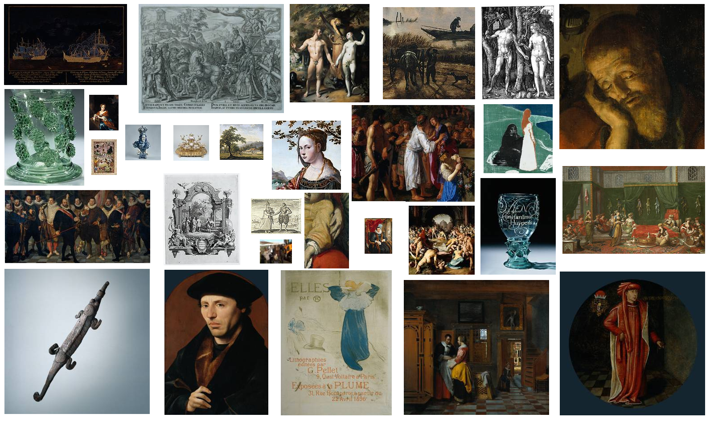

Technical University of Darmstadt
(Milligan, 2024) is the new author jfjfjfjfj
 © Nadezhda Povroznik. Published by De Gruyter in cooperation with the University of Luxembourg Centre for Contemporary and Digital History. This is an Open Access article distributed under the terms of the Creative Commons Attribution License CC-BY
© Nadezhda Povroznik. Published by De Gruyter in cooperation with the University of Luxembourg Centre for Contemporary and Digital History. This is an Open Access article distributed under the terms of the Creative Commons Attribution License CC-BY
from IPython.display import Image, display
display(Image("./media/cover.png"))
web history, web archives, Internet Archive, KB Web Collection, Rijksmuseum, openness, source criticism, historical record of web presence, URL analysis
The Rijksmuseum in Amsterdam has been widely recognised as a pioneering institution in making cultural heritage openly accessible. This paper is motivated by the question of how the historical development of openness at the Rijksmuseum can be studied through preserved web records. The main goal is to assess the availability and analytical value of web-archived resources documenting the Rijksmuseum’s web presence. The study is built upon datasets from the Internet Archive and the Web Collection of the National Library of the Netherlands (KB), covering the period from 1999 to June 2025. Methodologically, it applies URL-based analysis and comparative analysis to examine temporal coverage and overlaps between the two web collections. The findings show that web preservation of the Rijksmuseum website is highly uneven and only partially reflects the growth of the online collection. Records that document large-scale uploads and initiatives related to developing openness are highly fragmented in the web collections. Although the Internet Archive and the KB Web Collection each preserve unique materials and fill different temporal gaps, neither provides a comprehensive record on its own. The paper highlights the methodological consequences of these limitations and underscores the need to combine web-archived datasets to study the history of the museum on the web, to apply source criticism when analysing the development of the museum on the web, to the need for thorough and transparent documentation as an open practice, and to reconsider the approach to web preservation, thereby increasing the museum’s role in this process.
The Rijksmuseum in Amsterdam has been widely recognised as a pioneering institution in making cultural heritage openly accessible to researchers and the wider public ((Terras, 2015); (Rühse, 2017)). This initiative provided impetus and became a starting point for the Open GLAM movement, as museums across the globe began making their collections available under open licenses ((McCarthy, 2019); (Wallace, 2020)). Openness as a concept has a wide range of angles and may include open access, open data, open licensing and re-use, open methods, documentation, reproducibility, open participation and co-creation, and others ((Arthur et al., 2024);(Cao, 2024)). Therefore, considering these aspects and the historical trajectory of their implementation and the development of openness in the museums is important for understanding and mapping the complexity of openness.
The digital transformation of the Dutch museums can be traced back to 1969, when the government significantly subsidised the museum sector, favouring the first wave of digitisation ((Navarrete, 2014)). This step and the underlying initiatives contributed to the preparation of the digital infrastructure, which subsequently expanded. Some milestones of openness, specific to the digital domain, are located on the timeline, mapping the release of a substantial portions of its resources into the public domain under a Creative Commons Zero (CC0) license since 2011; the publication of its digital collections as Linked Open Data ((DijkshoornChris et al., 2018)); the promotion of use and reuse of its digital collections in high resolution through initiatives such as the Rijksawards and the Rijksstudio ((Volkers, 2017)); and the development of tools for data search and exploration ((Mensink & van Gemert, 2014)), alongside other projects. In Figure 1, you may see these milestones indicated on the timeline. By today, the Rijksmuseum made 823,077 artworks, 348,151 library items, and 196,648 visitor stories publicly available online ((Search the Collection, n.d.)).
from IPython.display import Image, display
display(Image("./media/timeline.png"))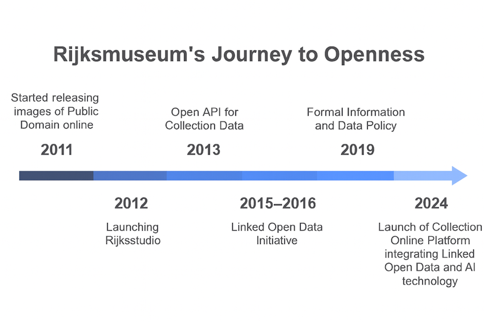
At the same time, do we have an opportunity to explore in more detail how openness was implemented, including how the representation of digital collections grew and changed over the years, which objects were prioritised for digitisation and publication and why, how the structure of metadata changed, and how content developed and expanded? Addressing these and other relevant questions would contribute significantly to our understanding of the historical development of open practices and assessment of openness from the documentation perspective.
To be able to address these questions, it is necessary to evaluate the available records. The museum’s website is key for consideration because it documents various activities, including digital collection’s development, and serves as the primary site for distributing information in different formats. To consider the development of the museum’s website and the museum’s collection on the web, the following main cohorts of resources were used in the research:
Datasets and other resources available on the museum’s website;
Relevant records published on the external platforms (such as Wikidata ((Wikidata, n.d.))) may help to expand the data record and specify some aspects of museum objects;
Snapshots on the web archives (Internet Archive ((Internet Archive, n.d.))) and the Web Collection of the National Library of the Netherlands ((De Bode & Teszelszky, 2021); (P. De Bode et al., 2021)). The web-archived collections are necessary to identify the records that have been preserved and, therefore, made available as historical materials for study.
The digital turn influenced the management of museum collections significantly, how the collections become structured and represented, and raised new expectations about publishing collections online ((Rother et al., 2022); (Rother et al., 2026)). In this regard, the history of a museum collection can be seen and studied through its documentation and the history of information management ((Turner, 2016)). At the same time, documentation as a practice of recording museum collections is a subject of debate, especially due to the implementation of digital tools and methods in museum work and collections’ representation on the web ((Economou & Kist, 2024); (Turner, 2016)). In particular, the metadata and types of metadata that have to be included in the publication are in the focus of the discussions ((Durrant, 2026); (Economou & Kist, 2024); (Jones, 2018); Park, 2023 park_we_want_to_know_more_2023). Researchers highlight that the information about objects has tended to focus on so-called “tombstone data” — maker, title, medium, dimensions, and accession number — while richer contextual information, including provenance, ownership history, and records of institutional decisions about objects, has remained comparatively underdeveloped ((Rother et al., 2022); (Rother et al., 2026)). The current research contributes to these discussions by examining the accessibility of these records retrospectively and articulating limits to understand the development of the collections on the web using the Rijksmuseum web presence as a case study.
Therefore, the main goal of this paper is to assess the availability and to evaluate the resources for analysis of the historical development of the Rijksmuseum on the web and in the digital museum collection.
Study of museums on the web using web archives is a highly interdisciplinary field that combines museology, history, information science, web archiving, and other perspectives ((de Wild & Povroznik, 2024)). Exploring museums’ web presence from a historical perspective is mainly possible through web archives, because these platforms are dedicated to preserving and representing the past web. Web archives preserve unique snapshots of the museum’s online presence, serving as a historical record invaluable for such study. These repositories, particularly the Internet Archive and the National Library of the Netherlands (the Koninklijke Bibliotheek, KB), which contributes to the preservation of the Dutch web by caring for the KB Web Collection, crawl websites to archive them for the future.
Scholarship on web history and the use of web archives has highlighted how web archives can be treated as sources and infrastructures for historical research ((Balbi, 2025));(Brügger, 2018); (Schroeder & Brügger, 2017); (Weber, 2018)) and has provided methodological foundations for studying the museums’ web ((Skov & Svarre, 2024); (Povroznik, 2025)). Scholars and web archivists also stressed the limitations of web archives for research ((Ben-David & Huurdeman, 2014); (Maemura, 2018)). These discussions are especially relevant for examining websites, as their digital prints are shaped by fragmented preservation, selection policies of web archives, their technical capacities, priorities and approaches to preservation in general and retrieval issues ((Brügger & Laursen, 2020); (Winters & Prescott, 2019)). Such factors determine which portions of the web’s past are captured and what will consequently be accessible to other generations and available for research. Therefore, the web study should necessarily integrate source criticism in the work. As a fundamental practice in historical research, source criticism is a necessary step for evaluating this source base and for determining what kinds of research questions we, as researchers, can raise. The questions of accuracy and completeness of web archive data must also be addressed ((Brügger, 2012); (Weber, 2018); (Ben-David & Amram, 2019)).
This paper contributes to the methodology of web history by proposing frameworks for evaluating the reliability and completeness of web archives as historical sources. Its findings support researchers studying the web presence of the Rijksmuseum or other institutions and help to develop best practices for using web-archived resources in historical analysis. For the Rijksmuseum, the study offers structured documentation of its institutional records preserved in web-archived collections over time, supporting strategic reflection on future steps to preserve its web heritage. For web archives, the analysis provides insights into coverage and preservation challenges that can guide further development of the web collections.
The analysis is focused on the period from 1999 to June 2025 due to the availability of data and limitations with the time when the data were collected and analysed. The first preserved snapshot of the Rijksmuseum’s website in the Internet Archive dates back to 28 November 1999, marking the beginning of its preservation there, while the KB Web collection dates back to capturing the website since 2010. This study systematically observes datasets that document the Rijksmuseum’s web presence in historical depth, comparing materials from the Internet Archive and the KB Web Collection. It analyses these two collections to determine the coverage of preserved materials over time, identify overlapping and missing information in both datasets, evaluate gaps, and assess opportunities to build a more comprehensive combined dataset. The study also examines how effectively these two major web archiving initiatives have captured the Rijksmuseum’s online presence and identifies temporal blind spots within the archival records.
The overarching goal of researching web-archived records of the Rijksmuseum’s web presence in the Internet Archive and the KB Web Collection was addressed by accomplishing the following tasks: 1) Analysis of the temporal distribution of the data in the datasets; 2) Research the reflection of the museum’s object collection in the datasets; 3) Comparative study of the datasets to identify unique and overlapping materials; 4) Checking the outputs by aligning the web-archived data with the current museum’s data.
These questions were approached primarily through URL analysis without downloading the materials themselves. URL analysis has been successfully implemented by researchers to analyse the historical web. Ben-David ((Ben-David, 2016)) used segmenting URLs from the Internet Archive to reconstruct the architecture of the former Yugoslav web domain, Brügger ((Brugger, 2021)) showed how CDX metadata supports large-scale historical analysis of the Danish web domains. URL analysis has also been applied to assess coverage of web-archived collections. Samar et al. ((Samar et al., 2014)) used URL extraction to reveal the scale of content that existed on the live web but was never captured by crawlers, and Maemura et al. ((Maemura et al., 2018)) explained how URL-level crawl metadata can systematically document the provenance and limitations of web archive collections. So, scholarship demonstrates the effectiveness of URL analysis and shows it as a scalable, metadata-driven method well suited to the current comparative and longitudinal study of web-archived museum presence.
URLs provide information about content that constituted the Rijksmuseum’s website and reflect a range of its characteristics. The URL string may disclose the content of some of the sections that the website carries. Therefore, it is possible to conduct content analysis of these fragments of textual information, identify key sections (for example, a collection or object number), and provide insights into the structure of the website and also into the distribution of information across language versions.
To access data from the Internet Archive, the Wayback Machine API was used ((Rijksstudio. Snapshot on 23.10.2018. Internet Archive, Wayback Machine, n.d.)). The resulting export file contains metadata for each capture, including the original URL, timestamp, status code, MIME type, content digest, and some other fields. The KB Web Collection was explored based on the Solrwayback instance available at the KB Datalab. The datasets were produced by applying similar practices for data filtering, cleaning, and processing. The raw data, obtained from the Internet Archive, and other derivatives, such as processed data, visualisations and Jupyter notebooks, have been published on Zenodo ((Povroznik, 2026)). The project has also been published on GitHub ((Rijksmuseum Data Services, n.d.)) to maintain transparency of the research process and its reproducibility. The repository contains all the information about data processing and settings used to obtain and analyse data. The dataset from the KB web collection is available in the KB DataLab due to copyright restrictions.
For assessing volumes of obtained archived materials, devoted to the museum collection online, and to compare them with the volume of the Rijksmuseum’s website on the live web across time, the indicator of the number of items in the museum’s collection database was explored. These statistics on the database’s volume were displayed on a dedicated webpage and obtained from the Wayback Machine. The Rijksstudio exposed the number of items in the database for both the general pool of artworks and those published in the Rijksstudio. For example, on the snapshot created on 23 October 2018, these numbers are available: 647.965 artworks and 437.977 Rijksstudio’s (cite id=“ih813”>(Rijksstudio. Snapshot on 23.10.2018. Internet Archive, Wayback Machine, n.d.)). Based on the available data from the last successfully preserved snapshot, the diagram was built to be able to trace the progress of uploading objects to the digital collection online (Figure 2).
import pandas as pd
import matplotlib.pyplot as plt
from IPython.display import display, HTML
csv_path = "./media/rijksstudio_yearend_counts.csv"
df = pd.read_csv(csv_path)
# ---- Remove 2025 (empty) ----
df = df[df["year"] != 2025].copy()
# ---- Plot (all remaining years) ----
years = df["year"].astype(int)
plt.figure(figsize=(11, 6))
plt.plot(years, df["total_artworks"],
marker="o", label="Total artworks")
plt.plot(years, df["rijksstudios"],
marker="o", label="Rijksstudio's")
plt.title("Rijksmuseum: Artworks Online and Rijksstudio's Entries")
plt.xlabel("Year")
plt.ylabel("Count")
plt.grid(True, linestyle="--", linewidth=0.5)
plt.legend()
plt.xticks(years, rotation=45)
plt.tight_layout()
plt.show()
# ---------- Clean formatting ----------
def fmt_int(x):
if pd.isna(x):
return ""
return f"{int(x)}"
def small_table(df_part):
tdf = df_part[["year", "total_artworks", "rijksstudios"]].copy()
return (
tdf.style
.format({
"year": lambda x: f"{int(x)}",
"total_artworks": fmt_int,
"rijksstudios": fmt_int
})
.set_properties(**{
"text-align": "center",
"font-size": "11pt",
"border": "1px solid #cccccc",
"padding": "4px"
})
.set_table_styles([
dict(selector="th", props=[
("font-size", "11pt"),
("text-align", "center"),
("border", "1px solid #cccccc"),
("padding", "4px"),
])
])
.hide(axis="index")
.to_html()
)
# ---- Four fragments ----
t1 = small_table(df[(df["year"] >= 2013) & (df["year"] <= 2015)])
t2 = small_table(df[(df["year"] >= 2016) & (df["year"] <= 2018)])
t3 = small_table(df[(df["year"] >= 2019) & (df["year"] <= 2021)])
t4 = small_table(df[(df["year"] >= 2021) & (df["year"] <= 2024)])
# ---- Show all four tables horizontally ----
html = f"""
<div style="display: flex; gap: 20px;">
<div>{t1}</div>
<div>{t2}</div>
<div>{t3}</div>
<div>{t4}</div>
</div>
"""
display(HTML(html))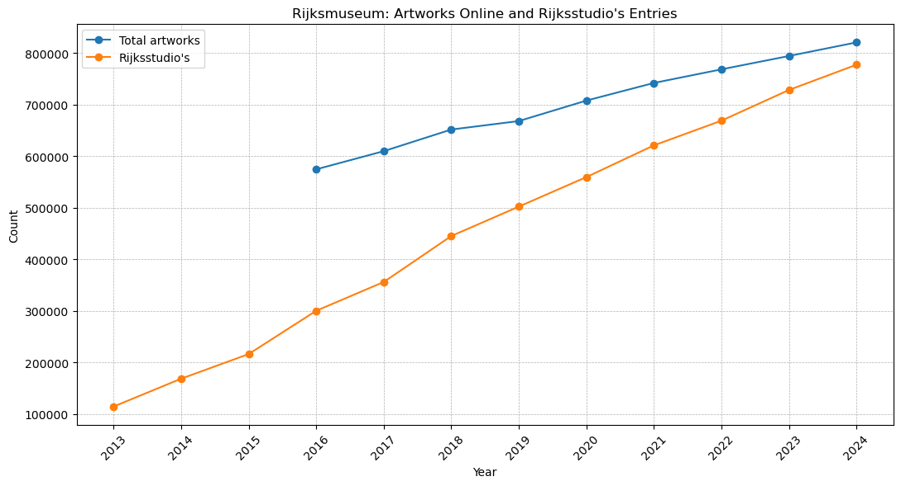
| year | total_artworks | rijksstudios |
|---|---|---|
| 2013 | 114259 | |
| 2014 | 168233 | |
| 2015 | 216034 |
| year | total_artworks | rijksstudios |
|---|---|---|
| 2016 | 574295 | 299965 |
| 2017 | 609537 | 355798 |
| 2018 | 651464 | 444914 |
| year | total_artworks | rijksstudios |
|---|---|---|
| 2019 | 667894 | 501966 |
| 2020 | 707585 | 559214 |
| 2021 | 741798 | 620693 |
| year | total_artworks | rijksstudios |
|---|---|---|
| 2021 | 741798 | 620693 |
| 2022 | 768170 | 668588 |
| 2023 | 794072 | 728149 |
| 2024 | 820441 | 777118 |
The line chart in Figure 2 shows the Rijksmuseum’s total number of artworks, published online in the general pool (blue line) and those available on the Rijksstudio (orange line). The temporal gap for these statistics is from 2013 to 2024. The website indicated the total number of items available in the database since 2013, according to records on the Wayback Machine. After 2024, the website’s structure changed, and such statistics for the later period are unavailable. Both curves display consistent and smooth growth trajectories, which come closer to each other approaching 2025, which means that by that time, almost all the digitised artworks for their reuse through the Rijkstudio platform have been uploaded. Rijksstudio entries steadily grew from about 110,000 to nearly 780,000 in 2024. Having these numbers at stake, it is possible to assess roughly the portion of the museum’s web preserved by the Internet Archive and the KB Web Collection.
After cleaning, the dataset contains 853,945 archived URLs. These URLs represent the preserved web resources associated with the Rijksmuseum and span 27 years of web archiving activity captured by the Internet Archive.
Figure 3 visualises the number of archived URLs over time, showing how the volume of web resources preserved in the collection changed over time. The data reveal larger fluctuations in the intensity of archiving in recent years, while earlier years are represented by a smaller number of URLs.
from IPython.display import Image, display
display(Image("./media/Figure_4.JPG"))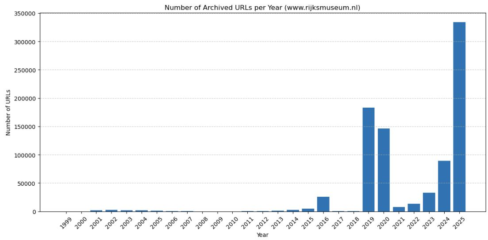
from IPython.display import Image, display
display(Image("./media/Figure_5.JPG"))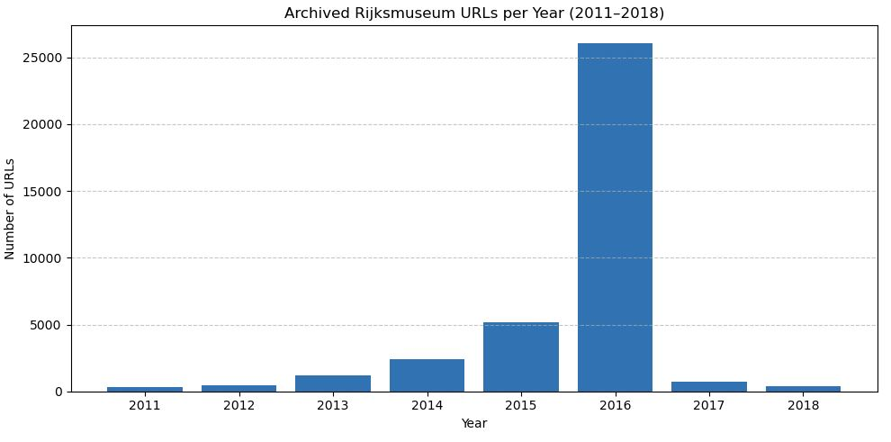
Zooming in on the data for 2011–2018 (Figure 4) shows an increase in the number of preserved URLs in 2016. However, the plot does not expose the expected increase in archived URLs that would correspond to the Rijksmuseum’s reported upload of more than 100,000 digital objects to its website in 2011. This means that such a substantial expansion of the museum’s online content had not been captured by the Internet Archive. The diagram’s bars for the next several years do not expose a significant increase comparable with the number on the live web either.
The official statistics for the KB Web Collection preserving the rijksmuseum.nl domain are shown in Figure 5.
from IPython.display import Image, display
display(Image("./media/Domain_Stats_2009-2025_Screenshot_2025-02-25_13-47-01.png"))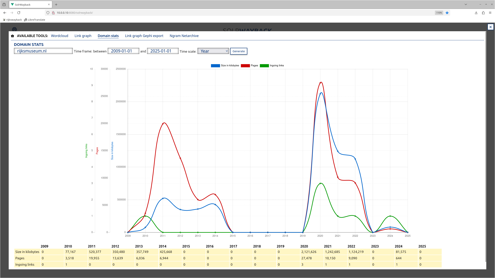
The screenshot visualises statistics on how the KB has preserved the domain rijksmuseum.nl between 2009 and 2025, based on the size of the collection in kilobytes (blue line), the number of pages (red line) and ingoing links (green line). There are two major preservation waves. The first peak occurs between 2010 and 2014, and the position of the blue curve leads us to guess that most of the volume was occupied by images. The dynamics of the curve after 2013 demonstrate changes in the strategy of web preservation towards prioritising webpages over images. Closeness of the blue line (pages) and the red line (size) reflects a larger amount of small-sized files captured (probably, HTML pages) rather than a larger-volume size specific to image formats. This strategy will also be exact to the next wave. After 2015, preservation activity dropped to zero. A second major wave appears between 2019 and 2022, showing a larger volume of data collected. The blue line peaks in 2020, followed by a gradual decline in 2021–2022. All these fluctuations demonstrate the adjustment of the collecting institution to web preservation and trying different approaches and technical settings.
After obtaining and cleaning the data, the records of the URLs in the KB Web Collection represent 41.892 items. Their distribution can be seen yearly in Figure 6.
from IPython.display import Image, display
display(Image("./media/KB_URLs_Cleaned_Per_Year.png"))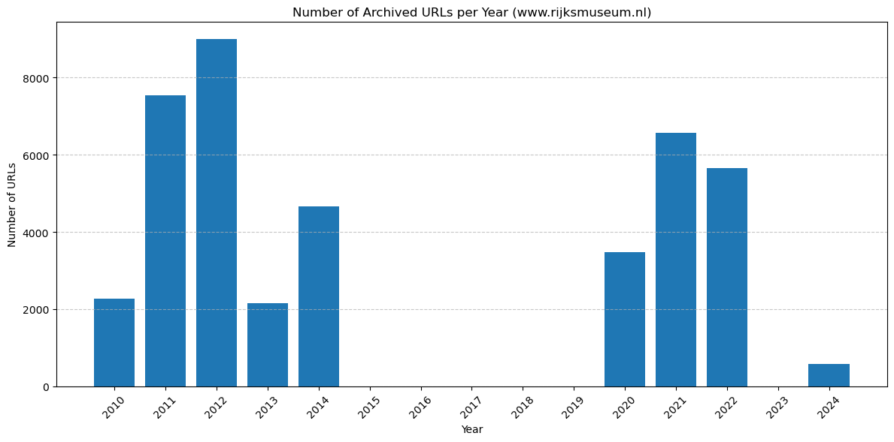
Comparing raw data, indicated on the screenshot with statistics from the KB Web Collection, and cleaned data, prepared for analysis, shows that a significant amount of information was filtered out as noise.
Displaying datasets together on the timeline (Figure 7) highlights the uneven distribution of data and differences in web preservation efforts.
# You may change the temporal gap at which data is displayed. For that:
# Change START_YEAR and END_YEAR to display a specific period,
# then run the cell to see the corresponding part of the diagram.
# Example:
# START_YEAR = 2005
# END_YEAR = 2012
import pandas as pd
import matplotlib.pyplot as plt
import numpy as np
# === Load data (do not edit) ===
df = pd.read_csv("./media/url_count_per_year_comparison.csv")
df["Year"] = df["Year"].astype(int)
# === Select period to display ===
# >>> CHANGE HERE <<<
START_YEAR = 1999 # e.g. 2005
END_YEAR = 2025 # e.g. 2012
# >>> CHANGE HERE <<<
# === Filter data (do not edit) ===
if START_YEAR > END_YEAR:
START_YEAR, END_YEAR = END_YEAR, START_YEAR
df_zoom = df[(df["Year"] >= START_YEAR) & (df["Year"] <= END_YEAR)].copy()
if df_zoom.empty:
print(f"No data available for the period {START_YEAR}–{END_YEAR}.")
else:
labels = df_zoom["Year"].astype(str).tolist()
x = np.arange(len(labels))
width = 0.35
plt.figure(figsize=(16, 6))
plt.bar(x - width / 2, df_zoom["IA"].to_numpy(), width, label="IA")
plt.bar(x + width / 2, df_zoom["KB"].to_numpy(), width, label="KB")
plt.title(f"Total URLs per Year ({START_YEAR}–{END_YEAR})", fontsize=14)
plt.xlabel("Year")
plt.ylabel("Number of URLs")
plt.xticks(x, labels, rotation=45)
plt.legend()
plt.tight_layout()
plt.show()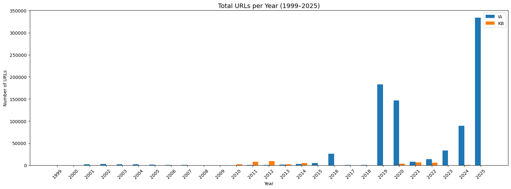
There are some periods in the Rijksmuseum’s web history that are covered only by the Internet Archive (before 2010 and between 2015 and 2019). At the same time, during 2010-2012, the KB contributed more significantly to web preservation than the Internet Archive, and collected more data in 2013-2014. These observations show that using a single source of information cannot cover all periods of the Rijksmuseum’s web presence and that these datasets have the potential to be compiled into a more comprehensive dataset.
from IPython.display import Image, display
display(Image("./media/openGLAM_URLs.jpg"))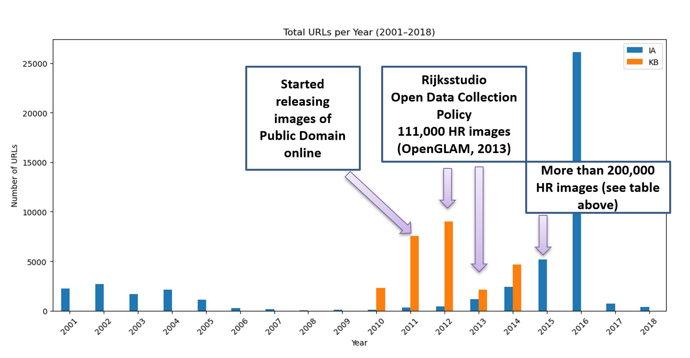
At the same time, placing some milestones of openness on this timeline enables us to see a significant gap in the historical record of the museum’s web presence (Figure 8). There is no evidence of spikes or other indicators of these uploads and the website’s growth in the years around the milestones when the museum’s collection was massively pulled online. For example, in 2011, the museum began releasing images to the public domain; at the end of 2012, the Rijkstudio was launched; and in 2013, 111.000 images were published in the public domain (OpenGLAM, 2013 noauthor_openglam_2013). In the museum’s database, there is also a record of more than 200,000 artworks available in high resolution, according to data from 2015 (see Figure 3). Evidence of these activities is missing in the archived records.
URL analysis was selected to understand the structure of the preserved materials and their belonging to the website’s subsections.
URL strings enable us to identify file formats by analysing their endings. The extracted file formats can be divided into several functional groups: 1) Core web document formats (such as HTML, PHP, and JSP). HTML is most important for tracing because it contains content information, which is crucial for research. Index files were also included in this group. 2) Image formats (such as GIF, JPG, PNG, SVG). They reflect a record of captured images of artworks and other images that reflect the design of the website, such as icons, buttons, and various fragments of graphics.
3) Audio and video formats (MP3, MOV). 4) Document formats such as PDF and TXT reflect downloadable materials. 5) Front-end presentation and scripting formats (such as CSS, JS, LESS). They are visible mainly until 2014. After that, likely the approach to the website changed, and stylesheets and scripts moved to external CDNs, resulting in fewer captures.
6) Other formats that contain specific components of the website to support its structure and design.
The most relevant for considering the cultural content are the files containing textual information (represented primarily in HTML) and images. Comparing their proportions across datasets shows the focus of preservation efforts over time and helps assess which expressive aspects of the Rijksmuseum web presence are most visible in these web-archival collections.
The two diagrams below (Figures 9 and 10) display the proportions of HTML and image formats captured each year, separately for the Internet Archive (IA) and the KB Web Collection (KB). Each bar represents 100% of only HTML and image formats for a given year, not all the formats in the dataset.
import pandas as pd
import matplotlib.pyplot as plt
import numpy as np
# --- Paths to your aggregated 2-row tables (HTML / IMAGE) ---
ia_path = "./media/IA_Rijksmuseum_file_formats_per_year_aggregated.csv"
kb_path = "./media/KB_URLs_200statuscode_full_cleaned_Formats_aggregated.csv"
# --- Load data and set index = format ---
ia = pd.read_csv(ia_path).set_index("format")
kb = pd.read_csv(kb_path).set_index("format")
# Make sure all non-format columns are numeric
ia = ia.apply(pd.to_numeric, errors="raise")
kb = kb.apply(pd.to_numeric, errors="raise")
years_full = list(range(1999, 2026)) # 1999–2025
def prep_props(df):
"""Return two lists (html_props, image_props) aligned with years_full."""
html_props = []
image_props = []
for y in years_full:
col = str(y)
if col in df.columns:
html_val = df.loc["HTML", col] if "HTML" in df.index else 0
image_val = df.loc["IMAGE", col] if "IMAGE" in df.index else 0
total = html_val + image_val
if total > 0:
html_props.append(html_val / total)
image_props.append(image_val / total)
else:
html_props.append(np.nan) # no bar
image_props.append(np.nan)
else:
html_props.append(np.nan) # no data for this year
image_props.append(np.nan)
return np.array(html_props), np.array(image_props)
# Prepare proportions
ia_html, ia_image = prep_props(ia)
kb_html, kb_image = prep_props(kb)
# --- IA plot ---
x = np.arange(len(years_full))
width = 0.8 # single wide bar per archive (since IA and KB are on separate plots)
plt.figure(figsize=(14, 5))
plt.bar(x, ia_html, width, label="HTML", color="#1f77b4")
plt.bar(x, ia_image, width, bottom=ia_html, label="IMAGE", color="#ff7f0e")
plt.ylabel("Proportion")
plt.xlabel("Year")
plt.title("Proportion of HTML and IMAGE per Year (Internet Archive)")
plt.ylim(0, 1)
plt.xticks(x, years_full, rotation=45)
plt.grid(axis="y", linestyle="--", linewidth=0.5)
plt.legend()
plt.tight_layout()
plt.show()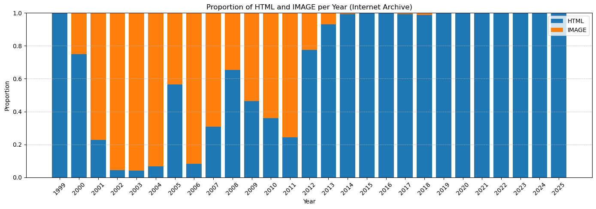
# --- KB plot ---
x = np.arange(len(years_full))
width = 0.8
plt.figure(figsize=(14, 5))
plt.bar(x, kb_html, width, label="HTML", color="#1f77b4")
plt.bar(x, kb_image, width, bottom=kb_html, label="IMAGE", color="#ff7f0e")
plt.ylabel("Proportion")
plt.xlabel("Year")
plt.title("Proportion of HTML and IMAGE per Year (KB)")
plt.ylim(0, 1)
plt.xticks(x, years_full, rotation=45)
plt.grid(axis="y", linestyle="--", linewidth=0.5)
plt.legend()
plt.tight_layout()
plt.show()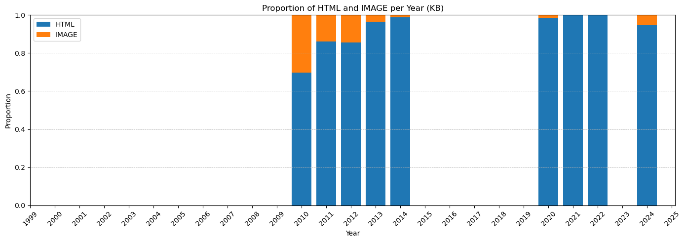
The proportional distribution of HTML and image formats across the two web collections (Figures 9 and 10) shows a clear long-term shift in the way the Rijksmuseum website has been captured and preserved. In the early years, particularly in the Internet Archive, image files constituted a substantial proportion of archived resources. Over time, however, both collections show a pronounced move toward an HTML-dominated crawl, also indirectly reflecting changes in the museum’s web infrastructure. In general, this trend reflects a transition in the construction of the Rijksmuseum’s website to dynamically generated architecture, where images and other media are delivered from external services (first of all related to JavaScript), which are more problematic for crawlers to capture.
As a result, the archival record, by today, is shaped almost entirely by the website’s structural and textual components and almost entirely omits its visual elements. This means that the materials captured by both web collections are increasingly imbalanced in their representation of the museum’s online presence and expose a conflict between contemporary web technologies and crawler capabilities, which negatively affects external capture. HTML pages remain retrievable to a certain extent and dominate the preserved material, whereas high-resolution and other types of images, dynamically loaded from external platforms and services, are captured only sporadically or not at all, even though they are meaningful as part of the born-digital heritage.
The URL segmentation was implemented to identify the website’s substructures based on content analysis of these segments. HTML type of files were selected for segmentation because they represent a foundational structure of the website.
During segmentation, the ‘/’ sign has been used as a segment identifier. All the string fragments were separated according to the hierarchy and marked with the segment number. The number was assigned according to the order, following the domain name. For example, in the link below, segment 1 is ‘nl’, segment 2 is ‘ontdek-de-collectie’, segment 3 is ‘overzicht’, and segment 4 is ‘johannes-vermeer’ - see this example below in Figure 11 ((Wayback Machine - Calendar of Https://Www.Rijksmuseum.Nl/Nl/Ontdek-de-Collectie/Overzicht/Johannes-Vermeer, n.d.)).
from IPython.display import HTML
url = "https://www.rijksmuseum.nl/nl/ontdek-de-collectie/overzicht/johannes-vermeer"
# Domain we want to segment after
prefix = "https://www.rijksmuseum.nl"
# Split URL into before-domain and after-domain parts
if prefix in url:
before, after = url.split(prefix, 1)
else:
before = url
after = ""
# Split segments after the domain (ignore empty strings)
segments = [seg for seg in after.split('/') if seg]
# Build structured HTML for each segment with numbering
segment_boxes = ""
for i, seg in enumerate(segments, start=1):
segment_boxes += f"""
<span style="display: inline-block; text-align: center; margin-right: 5px;">
<div style="font-size: 12px; color: #555;">{i}</div>
<div style="
text-decoration: underline;
text-decoration-color: red;
text-decoration-thickness: 4px;
text-underline-offset: 4px;
font-weight: bold;
">
{seg}
</div>
</span>
/
"""
# Combine full URL with domain and formatted segments
highlighted_url = f"{before}{prefix}/" + segment_boxes.rstrip("/")
# Reference text
reference_note = """
<div style="font-size: 13px; color: #555; margin-top: 8px;">
This URL has been taken from the Internet Archive collection. It has records of archiving between 2013 and 2016.
</div>
"""
# Display inside a framed box (NO hyperlink)
html = f"""
<div style="
border: 2px solid #4A90E2;
padding: 12px 16px;
margin: 12px 0;
background-color: #F2F8FF;
display: inline-block;
border-radius: 6px;
font-size: 16px;
color: #003366;
">
<b>{highlighted_url}</b>
{reference_note}
</div>
"""
HTML(html)In the URLs, several main types of segments were identified: 1) Prefix; 2) Core parts of the website; 3) Content-specific identifiers; 4) Additional parameters and identifiers in the hierarchy.
A prefix demonstrates the language versioning (such as ‘nl’ for Dutch, ‘en’ for English, ‘uk’ first used for British English but then assigned to Ukrainian, ‘de’ for German, ‘fr’ for French). On the diagram below, there is a distribution of prefixes in web collections. From the archived URLs, we see that the approach of the museum to publishing content in different languages varied. The pages in Dutch and English are dominant for both collections, but the proportions of the prefixes are different for the Internet Archive and the KB Web Collection.
# By prefix, Internet Archive
import pandas as pd
import matplotlib.pyplot as plt
import numpy as np
# === 1. Load data ===
csv_path = "./media/IA_url_segment_counts_by_year_prefix_only.csv"
df = pd.read_csv(csv_path)
# === 2. Define prefixes of interest ===
base_prefixes = ['nl', 'en', 'uk', 'de', 'fr', 'es', 'it']
df = df[df['Segment 1'].isin(base_prefixes)].copy()
# === 3. Identify year columns ===
year_cols = sorted([int(c) for c in df.columns if c.isdigit()])
# === 4. Create final language table ===
languages = ['nl', 'en', 'de', 'fr', 'es', 'it', 'uk']
pivot = pd.DataFrame(0.0, index=year_cols, columns=languages)
# === 5. Fill table (apply uk→en mapping for 2000–2004) ===
for prefix in base_prefixes:
row = df[df['Segment 1'] == prefix]
if row.empty:
continue
values = row.iloc[0][[str(y) for y in year_cols]].astype(float).values
for i, year in enumerate(year_cols):
count = values[i]
if prefix == 'uk':
if 2000 <= year <= 2004:
pivot.loc[year, 'en'] += count
else:
pivot.loc[year, 'uk'] += count
else:
pivot.loc[year, prefix] += count
# === 6. Convert to proportions ===
proportions = pivot.div(pivot.sum(axis=1), axis=0).fillna(0)
# === 7. Colors (distinct, non-similar) ===
colors = {
'nl': '#1f77b4',
'en': '#ff7f0e',
'de': '#2ca02c',
'fr': '#d62728',
'es': '#9467bd',
'it': '#8c564b',
'uk': '#17becf'
}
# === 8. Plot 100% stacked bar chart ===
plt.figure(figsize=(16, 7))
x = np.arange(len(year_cols))
bottom = np.zeros(len(year_cols))
for lang in languages:
vals = proportions[lang].values
plt.bar(
x,
vals,
bottom=bottom,
color=colors[lang],
label=lang
)
bottom += vals
plt.xticks(x, year_cols, rotation=75)
plt.xlabel("Year")
plt.ylabel("Proportion (%)")
plt.yticks(np.linspace(0, 1, 6), [f"{int(v*100)}%" for v in np.linspace(0, 1, 6)])
plt.title("Language Prefix Proportions by Year, 100% stacked (Internet Archive)")
# === 9. Place legend INSIDE the empty space (2005–2011 area) ===
# Adjust x,y here if needed → (0.45, 0.55) means:
# x = 45% across plot width, y = 55% up plot height.
plt.legend(
[
"nl – Dutch",
"en – English (incl. uk for 2000–2004)",
"de – German",
"fr – French",
"es – Spanish",
"it – Italian",
"uk – Ukrainian (from 2005)",
],
title="Languages",
bbox_to_anchor=(0.45, 0.55), # <── position inside plot
frameon=True,
borderpad=1,
)
plt.tight_layout()
plt.show()
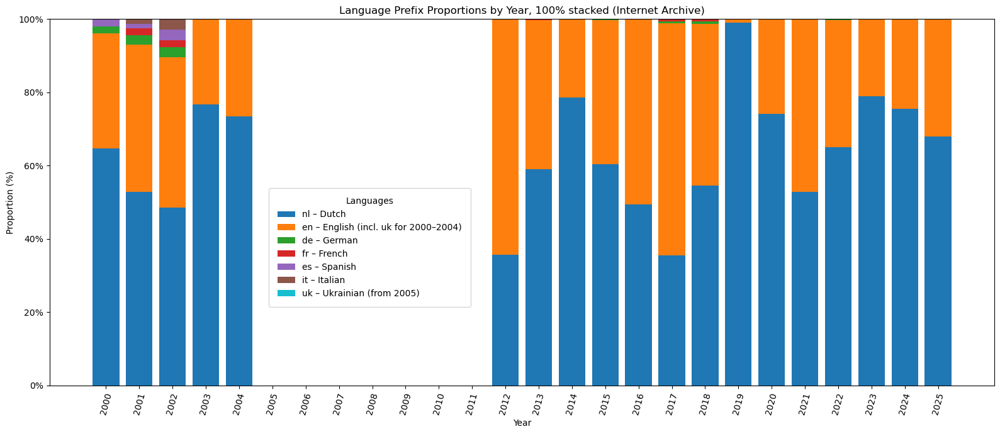
# By prefix, KB Web Collection
import pandas as pd
import matplotlib.pyplot as plt
import numpy as np
# === 1. Load data ===
csv_path = "./media/KB_url_segment_counts_by_year_prefix_only.csv"
df = pd.read_csv(csv_path)
# === 2. Define prefixes of interest ===
base_prefixes = ['nl', 'en', 'de', 'fr', 'es', 'it']
df = df[df['Segment 1'].isin(base_prefixes)].copy()
# === 3. Identify year columns actually present in KB file ===
kb_year_cols = sorted([int(c) for c in df.columns if c.isdigit()])
# === 3a. Define full year range you want to see (as in IA) ===
# Adjust if your IA diagram uses a different range
all_years = list(range(2000, 2026))
# === 4. Create final language table with ALL years (even empty ones) ===
languages = ['nl', 'en', 'de', 'fr', 'es', 'it']
pivot = pd.DataFrame(0.0, index=all_years, columns=languages)
# === 5. Fill table (apply uk→en mapping for 2000–2004) ===
for prefix in base_prefixes:
row = df[df['Segment 1'] == prefix]
if row.empty:
continue
# Only use KB years that actually exist as columns
values = row.iloc[0][[str(y) for y in kb_year_cols]].astype(float).values
for i, year in enumerate(kb_year_cols):
count = values[i]
if prefix == 'uk':
if 2000 <= year <= 2004:
pivot.loc[year, 'en'] += count
else:
pivot.loc[year, 'uk'] += count
else:
pivot.loc[year, prefix] += count
# === 6. Convert to proportions (each year sums to 1.0) ===
proportions = pivot.div(pivot.sum(axis=1), axis=0).fillna(0)
# === 7. Colors (distinct, non-similar) ===
colors = {
'nl': '#1f77b4',
'en': '#ff7f0e',
'de': '#2ca02c',
'fr': '#d62728',
'es': '#9467bd',
'it': '#8c564b',
}
# === 8. Plot 100% stacked bar chart ===
plt.figure(figsize=(16, 7))
x = np.arange(len(all_years))
bottom = np.zeros(len(all_years))
for lang in languages:
vals = proportions[lang].values # aligned with all_years index
plt.bar(
x,
vals,
bottom=bottom,
color=colors[lang],
label=lang
)
bottom += vals
plt.xticks(x, all_years, rotation=75)
plt.xlabel("Year")
plt.ylabel("Proportion (%)")
plt.yticks(np.linspace(0, 1, 6), [f"{int(v*100)}%" for v in np.linspace(0, 1, 6)])
plt.title("Language Prefix Proportions by Year, 100% stacked (KB Web Collection)")
# === 9. Legend inside the plot ===
plt.legend(
[
"nl – Dutch",
"en – English (incl. uk for 2000–2004)",
"de – German",
"fr – French",
"es – Spanish",
"it – Italian",
],
title="Languages",
bbox_to_anchor=(0.25, 0.45), # tweak if needed
frameon=True,
borderpad=1,
)
plt.tight_layout()
plt.show()
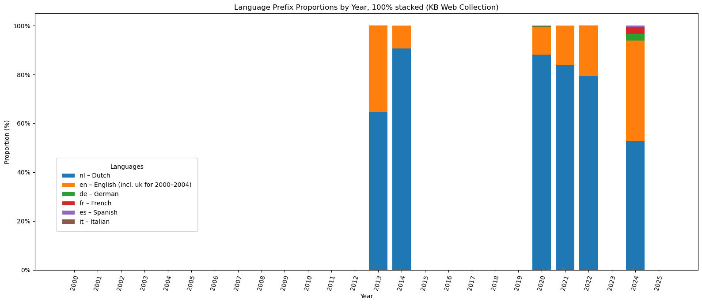
The comparison of language prefixes across the two web collections (Figures 12 and 13) shows different preservation profiles shaped by the scope and harvesting strategies of the analysed institutions. The Internet Archive demonstrates more multilingual content on the Rijksmuseum website and shows that early captures from 2000 to 2004 were considerably more diverse in versioning, with English representing up to half of all accessible pages and several additional languages, including German, French, Spanish, and Italian. From the mid-2000s onward, however, the proportion of other languages declines. After 2012, English became a significant component in the IA snapshots, in separate years representing up to 60 per cent of the web archived content, which is much higher in some years than what is visible from the KB Web Collection.
In the KB Web Collection, the Dutch prefix dominates most of the years and typically accounts for 70 to 90 per cent of the content and in 2024, it includes about 10 per cent in other languages in the collection. English appears consistently as the secondary language, while all other prefixes occur only sporadically. This pattern reflects both the museum’s stable bilingual publishing strategy and the targeted nature of KB harvesting, which tends to prioritise core pages over multilingual variants.
Segmentation of URLs helped to identify the core parts of the website, such as ‘collection’, ‘stories’, ‘api’, ‘exhibitions’, and others. Due to the uneven process of web preservation, it is impossible to assess to a certain extent the dominant structures of the website from a historical perspective. However, we are able to evaluate preserved content in the web collections and see the potential of these collections to communicate the content of these structures.
The visualisation of the segments in the word cloud (Figure 14) reflects only the Internet Archive’s collection. The KB Web Collection overlaps with the Internet Archive in these Top 15 segments per year.
# === INSTRUCTION ===
# To visualise a specific time period (e.g. to explore temporary gaps),
# change the values of START_YEAR and END_YEAR in the USER SETTINGS section below.
# Example:
# START_YEAR = 2005
# END_YEAR = 2010
# After changing these values, re-run the cell to update the diagram.
# Wordcloud without prefixes
import pandas as pd
import numpy as np
import matplotlib.pyplot as plt
from wordcloud import WordCloud
import ipywidgets as widgets
from IPython.display import display, clear_output
# === 1. Load the resulting TOP15 table ===
csv_path = "./media/IA_url_segment_counts_by_year_TOP15_no_prefixes.csv"
df = pd.read_csv(csv_path, dtype=str)
# Identify segment columns and year columns
segment_cols = [c for c in df.columns if c.startswith("Segment")]
year_cols = [c for c in df.columns if c.isdigit()]
year_cols = sorted(year_cols, key=int)
# Convert numeric columns (years + total)
numeric_cols = year_cols + ['total'] if 'total' in df.columns else year_cols
df[numeric_cols] = df[numeric_cols].apply(pd.to_numeric, errors="coerce").fillna(0)
# === define min and max years FIRST ===
min_year = int(min(year_cols))
max_year = int(max(year_cols))
# --- USER SETTINGS ---
START_YEAR = min_year
END_YEAR = max_year
# ---------------------
# === helper: build word frequencies from a weight Series (per row) ===
def build_word_freq(weights: pd.Series):
freq = {}
for idx, w in weights.items():
if w <= 0:
continue
row = df.loc[idx]
for col in segment_cols:
if col not in df.columns:
continue
word = row[col]
if pd.isna(word):
continue
word = str(word).strip()
if not word:
continue
freq[word] = freq.get(word, 0) + w
return freq
# === helper: plot wordcloud with *mitigated* size differences ===
def plot_wordcloud(word_freq_raw, title):
if not word_freq_raw:
print("No data for this selection.")
return
values = np.array(list(word_freq_raw.values()))
# Soft size scaling
log_vals = np.log1p(values)
scaled = (log_vals - log_vals.min()) / (log_vals.max() - log_vals.min() + 1e-9)
scaled = 1 + scaled # all sizes in [1, 2]
word_freq = dict(zip(word_freq_raw.keys(), scaled))
wc = WordCloud(
width=1200,
height=600,
background_color="white"
).generate_from_frequencies(word_freq)
plt.figure(figsize=(14, 7))
plt.imshow(wc, interpolation="bilinear")
plt.axis("off")
plt.title(title, fontsize=16, pad=40)
plt.tight_layout()
plt.show()
# === Manual year selection (no widget) ===
years = [str(y) for y in range(START_YEAR, END_YEAR + 1)]
weights = df[years].sum(axis=1)
wf_raw = build_word_freq(weights)
plot_wordcloud(
wf_raw,
f"Wordcloud of Top 15 Segments Collected per Year {START_YEAR}–{END_YEAR} (Internet Archive)"
)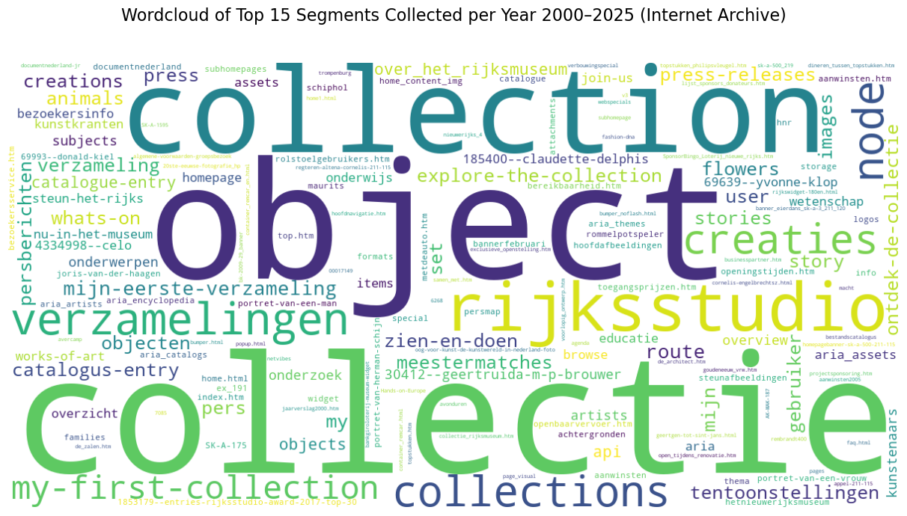
The URL string could include a maximum of 8 segments, but because the repetition of values in segments 6-8 was low, only the top 15 values from segments 1-5 were visualised. The word cloud displays the names of the top 15 segments, ranked by their appearance in URLs by year. Based on this word cloud, it is possible to identify a range of topics, visible through the segmented areas of the URLs. Overall data, for the entire period, shows dominance of the collection topic being written in English (collection) and in Dutch (collectie). This dominance is conditioned by massive uploads of the digital collection online.
A collection-centred topic is dominant for the dataset. It includes such terms as collectie (collection), collection, collections, verzamelingen (collections), object, objecten (objects), and explore-the-collection, which collectively describe access to artworks and overviews of the collections. A second cluster relates to participatory-driven features, most visibly represented by the Rijksstudio, and is surrounded by terms such as creaties (creations), my-first-collection, mijn-eerste-verzameling (my first collection), creations, my, mijn (my), and set, signalling personalisation in the use of the collection. A third set of segments is tied to curatorial content and narratives, including stories, story, kunstkranten (art newspapers), blog-like structures, and catalogus-entry (catalogue entry), reflecting interpretive layers of the content and its contexts. A fourth group covers visitor information and public communication, exposing segments such as zien-en-doen (see and do), bezoekersinfo (visitor information), whats-on, press, pers (press), persberichten (press releases), press-releases, tentoonstellingen (exhibitions), agenda (agenda / events), and nu-in-het-museum (now in the museum). Finally, a distinct cluster points to research, education, and scholarly resources, which is indicated by such segments as onderzoek (research), onderwijs (education), educatie (education), wetenschap (science), subjects, onderwerpen (subjects/topics), and artists, and another reflects technical and infrastructural elements, such as api, achtergronden (backgrounds), and assets.
Adjusting the period, it is possible to see changes in the dominant segments over time (use the hermeneutic layer to explore the data). Across all periods in the Internet Archive captures, collection-related segments remained the core focus of the Rijksmuseum website. What changes over time is the vocabulary surrounding this stable core. In the early 2000s, the website’s records revealed information about visiting the museum, which is noticeable through such segments as bezoekersinfo (visitor information), tentoonstellingen (exhibitions), bereikbaarheid (accessibility) and openingtijden (opening hours). Around 2012–2014, with the launch of Rijksstudio, the dataset reflects inclusion of participatory and personalised content such as rijksstudio, creaties (creations), mijn-eerste-verzameling (my first collection), my-first-collection. In the late 2010s and early 2020s, new segments appeared at the top to designate digital infrastructure.
Now consider the segments related to the collection more precisely. Initially, research has been largely motivated by the development of digital collections published by the museum online and the processes around the development of openness. Therefore, it is interesting to look at the representation of artworks in the collections.
Some URL strings included the identification number of an object from the collection. The cataloguing practice at the Rijksmuseum represents each object number as a series of capital letters and numbers separated by ‘-‘ or ‘.’ symbols. For example, the self-portrait of Rembrandt van Rijn from the museum collection has an object number SK-A-4691. Algorithmically, these types of codes were identified in the URL strings. To focus the search on the collections, these codes were detected only in strings that include the segments ‘collection’ and ‘collectie’ in the HTML file formats. HTML is important for exploration as a framing page with the core textual and structural information about collections and objects. These codes were identified in both web collections. In the Internet Archive, there are 312.406 object numbers and in 6.282 the KB Web Collection (see Figure 15). The spherical diagram provides an overview of the unique and overlapping object numbers. The KB Web Collection, even being significantly smaller in size, still has unique data, 585 object numbers, not represented in the collection of the Internet Archive.
import pandas as pd
import matplotlib.pyplot as plt
# Optional: for the Venn diagram (if installed)
try:
from matplotlib_venn import venn2
HAS_VENN = True
except ImportError:
HAS_VENN = False
print("matplotlib_venn not installed – Venn diagram will be skipped.")
# --- File paths ---
kb_path = "./media/KB_Object_Numbers.csv"
ia_path = "./media/IA_Object_Numbers.csv"
# --- Read files ---
kb = pd.read_csv(kb_path)
ia = pd.read_csv(ia_path)
# --- Get unique object numbers as sets ---
kb_set = set(kb['object_number'].dropna().astype(str).str.strip())
ia_set = set(ia['object_number'].dropna().astype(str).str.strip())
# --- Overlap & uniques ---
overlap = ia_set & kb_set
ia_only = ia_set - kb_set
kb_only = kb_set - ia_set
n_ia_only = len(ia_only)
n_kb_only = len(kb_only)
n_overlap = len(overlap)
print("=== OBJECT NUMBER OVERLAP SUMMARY ===")
print(f"KB unique object_numbers: {len(kb_set)}")
print(f"IA unique object_numbers: {len(ia_set)}")
print(f"Overlap (in both): {n_overlap}")
print(f"Only in KB: {n_kb_only}")
print(f"Only in IA: {n_ia_only}")
# --- VENN / SPHERIC DIAGRAM ONLY ---
if HAS_VENN:
plt.figure(figsize=(6, 6))
v = venn2(
subsets=(n_kb_only, n_ia_only, n_overlap),
set_labels=('KB', 'IA')
)
# Colours
v.get_patch_by_id('10').set_color('#ff7f0e') # KB only
v.get_patch_by_id('01').set_color('#1f77b4') # IA only
v.get_patch_by_id('11').set_color('#6a3d9a') # overlap
# Move KB-only number outside the left circle
kb_only_label = v.get_label_by_id('10')
if kb_only_label is not None:
x, y = kb_only_label.get_position()
kb_only_label.set_position((x - 0.06, y)) # gentle shift left
# Reposition KB label upward
kb_set_label = v.get_label_by_id('A')
if kb_set_label is not None:
x, y = kb_set_label.get_position()
kb_set_label.set_position((x - 0.08, y + 0.05))
plt.title("Overlap of Object Numbers between the Internet Archive (IA) and the KB Web Collection (KB)", fontsize=14, pad=15)
plt.show()=== OBJECT NUMBER OVERLAP SUMMARY ===
KB unique object_numbers: 6258
IA unique object_numbers: 312406
Overlap (in both): 5673
Only in KB: 585
Only in IA: 306733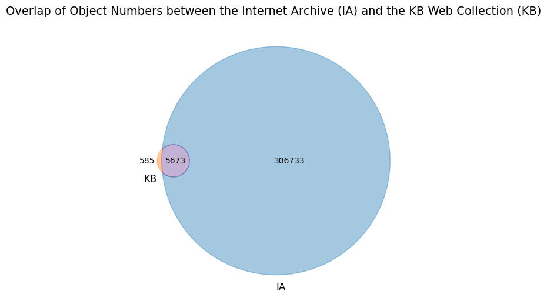
The amount of object numbers extracted from URL strings that lead to image files is significantly lower than of HTML files. For the Internet Archive, the total number of unique object numbers is 1086, and for the KB Web collection, it is 69. Figure 16 shows overlapping images, where a part of the images from the KB Web Collection does not exist in the collection of the Internet Archive (48 items).
import pandas as pd
from matplotlib import pyplot as plt
from matplotlib_venn import venn2
# === Paths to deduplicated files ===
path_ia = "./media/IA_IMAGE_urls_object_numbers_DEDUP.csv"
path_kb = "./media/KB_IMAGE_object_numbers_DEDUP.csv"
# === Load files ===
df_ia = pd.read_csv(path_ia, dtype=str)
df_kb = pd.read_csv(path_kb, dtype=str)
# === Extract unique object numbers ===
set_ia = set(df_ia["object_number"].dropna())
set_kb = set(df_kb["object_number"].dropna())
# KB-only object numbers
unique_kb = set_kb - set_ia
# === Print summary ===
print("IA items:", len(set_ia))
print("KB items:", len(set_kb))
print("Overlap:", len(set_ia & set_kb))
print("Unique to IA:", len(set_ia - set_kb))
print("Unique to KB:", len(unique_kb))
# === Draw Venn Diagram ===
plt.figure(figsize=(6.5, 6))
v = venn2(
subsets=[set_ia, set_kb],
set_labels=("IA", "KB"),
)
# Optional: change colors
if v.get_patch_by_id('10'):
v.get_patch_by_id('10').set_color("#80b1d3") # IA only
if v.get_patch_by_id('01'):
v.get_patch_by_id('01').set_color("#fdb462") # KB only
if v.get_patch_by_id('11'):
v.get_patch_by_id('11').set_color("#b3de69") # overlap
# Adjust text sizes
for text in v.subset_labels:
if text:
text.set_fontsize(12)
for label in v.set_labels:
label.set_fontsize(14)
plt.title(
"Overlap of Object Numbers in the Image subset between the Internet Archive (IA) "
"and the KB Web Collection (KB)",
fontsize=14,
pad=15
)
plt.tight_layout()
plt.show()IA items: 1086
KB items: 69
Overlap: 21
Unique to IA: 1065
Unique to KB: 48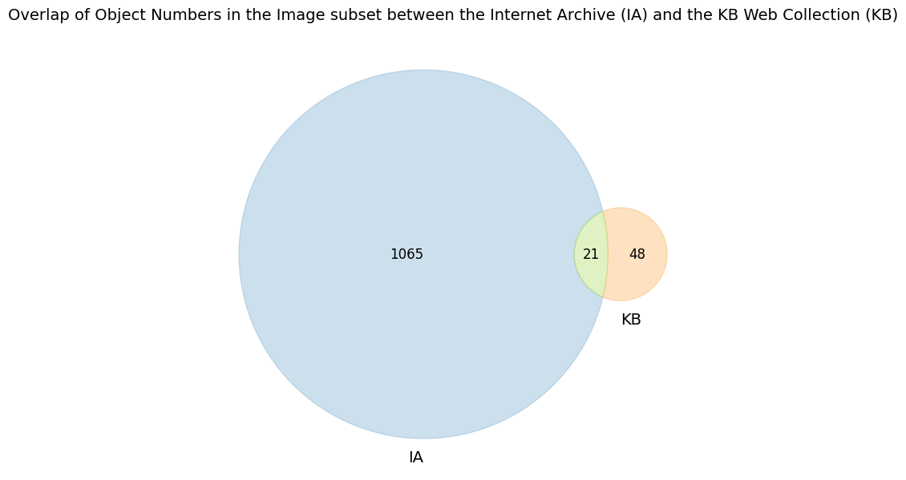
Data filtering in the dataset is very high at this stage, because only images that include the ‘collection’ or ‘collectie’ segment are included. They are deduplicated by having one object number across all datasets, regardless of their size and quality. Deduplication included the rule of keeping the most recent record and deleting from the subset of data older versions of the image. Also, these files mainly belong to the earlier period of history of the website, as it is visible from the distribution chart in Figure 17.
# Distribution object numbers by years
import pandas as pd
import matplotlib.pyplot as plt
import numpy as np
# === 1. Paths to your deduplicated files ===
path_ia = "./media/IA_IMAGE_urls_object_numbers_DEDUP.csv"
path_kb = "./media/KB_IMAGE_object_numbers_DEDUP.csv"
# === 2. Helper: load file and get counts per year ===
def load_and_count(path, label):
df = pd.read_csv(path, dtype=str)
# pick the year column: prefer 'year', else 'crawl_year'
if "year" in df.columns:
year_col = "year"
elif "crawl_year" in df.columns:
year_col = "crawl_year"
else:
raise ValueError(f"No 'year' or 'crawl_year' column in {path}")
# convert year to numeric
df[year_col] = pd.to_numeric(df[year_col], errors="coerce")
# drop rows without year or object_number
df = df.dropna(subset=[year_col, "object_number"])
# count UNIQUE object_number per year
counts = (
df.groupby(year_col)["object_number"]
.nunique()
.sort_index()
)
counts.name = label
return counts
ia_counts = load_and_count(path_ia, "IA")
kb_counts = load_and_count(path_kb, "KB")
# === 3. Combine years from both datasets ===
all_years = sorted(set(ia_counts.index).union(set(kb_counts.index)))
ia_vals = [ia_counts.get(y, 0) for y in all_years]
kb_vals = [kb_counts.get(y, 0) for y in all_years]
# === 4. Plot grouped bar chart ===
x = np.arange(len(all_years))
width = 0.4
plt.figure(figsize=(14, 6))
plt.bar(x - width/2, ia_vals, width, label="IA", color="#4C72B0")
plt.bar(x + width/2, kb_vals, width, label="KB", color="#DD8452")
plt.xticks(x, all_years, rotation=90)
plt.xlabel("Year")
plt.ylabel("Number of unique object numbers")
plt.title("Distribution of Object Numbers by Year (the Internet Archive (IA) vs the KB Web Collection (KB))")
plt.legend()
plt.grid(axis="y", alpha=0.3)
plt.tight_layout()
plt.show()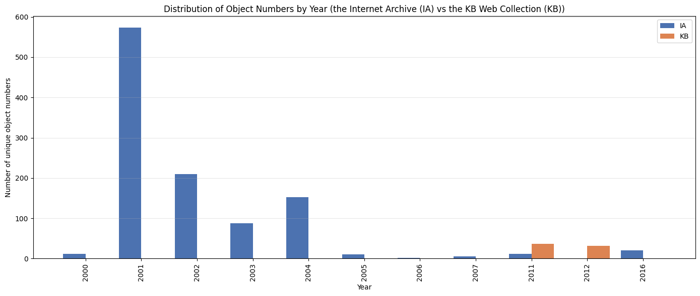
The absence of object numbers after 2016, as the diagram displays, highlights changes in the practice of building the URLs that excluded the object numbers from the string. Using the examples from experimental exploration, this transition will be discussed further.
This diagram also shows the strict limitations of the URL analysis in addressing visual changes. Based on those URLs, which indicate the image format and include the object number in it, the collage was created that you may see on the cover of this article. These images were published on the museum’s website in the online collection in the early 2000s. They were obtained from the Internet Archive, kept at the same resolution and then combined into a collage to illustrate some examples of the museum’s website visuals. These images are very different in their quality from the high-resolution reproductions available today. These visuals, even in low resolution, serve as historical evidence of the museum’s early web presence. They give an idea of the images used on the website and in the online collection in general, and show the opportunities offered by the technologies of the respective time. However, the preserved data do not provide sufficient information to assess shifts in visual support for the objects and the collection in general, due to a lack of data and difficulties identifying dedicated images in the data.
An additional experiment was conducted to assess the results of object number extraction. The object numbers captured by the Internet Archive were compared with the museum’s database information from the historical data dumps. The Rijksmuseum publishes various datasets on its website for public access (Rijksmuseum Data Services, 2025 noauthor_rijksmuseum_nodate). Data, provided by the museum, includes the data dumps from different domains (including the museum’s collection and library ((Data Dumps | Rijksmuseum Data Services, n.d.))). The website also suggests historical data dumps, which provide metadata from 2019 and 2020 ((Historical Data Dumps | Rijksmuseum Data Services, n.d.)). Newly published datasets include information about each object, located in separate files, which makes them difficult to explore in bulk. For the experiment, the most recent consistent dataset, organised in a single csv file, dates back to January 2020. It was downloaded from Historical Data Dumps marked as ‘Comma Separated Values object metadata download’ ((Historical Data Dumps | Rijksmuseum Data Services, n.d.)) and used in the experiment.
Object numbers were extracted from the URLs, deduplicated, and compared with the object numbers from the Rijksmuseum Data Dumps. Results of these experiments are presented in the table and spherical diagram below (Figure 18). The datasets largely overlap in object numbers, as expected. At the same time, the unexpected result is a large number of unique entries (8.481) in the Internet Archive that did not match the Rijksmuseum Data Dumps.
from IPython.display import Image, display
display(Image("./media/Figure_19.png"))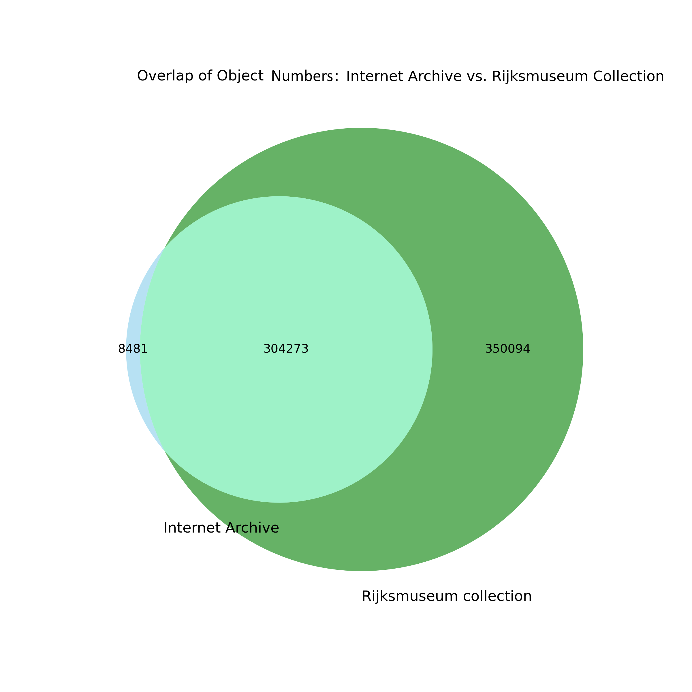
Selecting the object numbers randomly allowed us to find some data missing from the Data Dumps but present in the Rijksmuseum collection online. For example, object number AK-MAK-1349-H is specific to the book with sketches by Katsushika Hokusai (Schetsen van Hokusai, 2026 noauthor_schetsen_nodate). However, some of these randomly selected numbers were missing in the same form but returned with additional prefixes (for example, object number “BI-1890-2974-A-13” exists in the collection as BI-1890-2974-A-13(V), and it is designated to the artwork “Lossen van tonnen op een afgemeerd zeilschip” (Schotel, 2026 schotel_lossen_nodate). This example shows that the method of extracting object numbers was imperfect and excluded the object numbers with parentheses “()”. At the same time, it was also discovered that the museum changed its practice of including the object numbers in the URLs for building the collection online, instead indicating their titles in the URL strings and adding an encoded ending to the URL to standardise the string for more convenient operation of the website.
The randomly selected object numbers that were indicated as missing in both the Rijksmuseum Data Dumps and the museum’s collection on the live web were also searched on Wikidata. Some of them returned in the search system, being labelled as part of the Rijksmuseum collection. Such an example is the object with the object number “SK-A-3507”, which is unique to the web collection from the Internet Archive and is missing again in both the Rijksmuseum Data Dumps and the Rijksmuseum collection online (see Figure 19).
from IPython.display import Image, display
display(Image("./media/SK-A-3507.JPG"))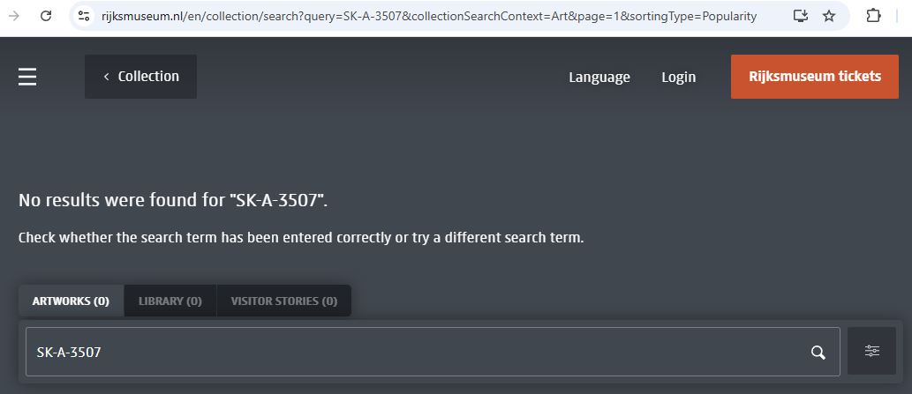
However, the object was discovered on Wikimedia as the “File:Kaïn en Abel Rijksmuseum SK-A-3507.jpeg”, titled in summary as “Willem de Zwart: Kaïn en Abel” and labelled by ‘accession number’ SK-A-3507. Also, the description indicated that the painting belonged to the Rijksmuseum collection (File:Kaïn en Abel 2026 noauthor_filekain_nodate)). This finding raises questions about the museum’s documentation practices, as it is not yet transparent at the moment whether the painting remains in the collection. It was not found on the Rijksmuseum collection online under the title, nor in the collection devoted to the painter, Willem de Zwart.
The findings brought the following insights to the discussion.
First of all, the preserved portion of the museum’s website in the web collections is significantly smaller than the website that existed on the live web. The scholars admit that it is difficult or even impossible to assess the website’s true size on the live web from a historical perspective (Brügger, 2018 brugger_archived_2018; Milligan, 2024 milligan_averting_2024). However, for the Rijksmuseum, it is partly feasible to evaluate the volume of drastically underrepresented materials in web collections by comparing the number of uploads of collection objects to the website, as documented by dynamically generated numbers from the database, reflected in the archived web snapshots. Data show that the web collections for the period before 2018 do not cover even 10% of the website from the live web at that time. The Rijksmuseum’s approach to displaying this information on the website is a rare but valuable practice. After the structure of the website was changed in 2024, this information about the size of the database became hidden. This brings to the question about the ephemerality of data points that support historical reconstruction and the dependence of web-historical analysis on design and infrastructural decisions made by cultural institutions. When indicators such as dynamically generated object counts disappear due to changes in the web infrastructure, the possibility of retrospectively estimating the scale of a website is effectively lost.
Another issue related to the redesign of the website and other infrastructural decisions concerns to shifts in how the URL structure is shaped. This is specific to the period after 2018. Changes in the URL structure, and particularly replacing the object number with the title of an object and encoding a part of the string to standardise a URL, made it difficult to analyse URLs using automated techniques due to the many unique values, complicated segmentation with extremely long and complex segments to be able to extract meanings. Moreover, the Rijksmuseum actively uses JavaScript to make the website visually attractive - JavaScript shapes content dynamically, makes it easier to adjust content to different types of mobile devices, and supports different interactive features. However, using JavaScript in the website architecture makes it difficult, and rather impossible, for crawling tools to capture the website by web archiving institutions. This happens because much of the content, especially images, is loaded from external resources that are integrated into the website via JavaScript. The issue is even more multi-layered in its complexity due to the general vulnerability of the websites to external invasions and the need to protect infrastructures from malicious actions. This is why institutions limit external crawls. Statistics on the Wayback Machine (Wayback Machine, 2026 noauthor_wayback_nodate) show that the number of captures by the Internet Archive drastically decreased after 16 May 2025. Probably, the Rijksmuseum at that time introduced specific measures against external crawling.
Analysis of the reflection of the museum objects in web collections exposed not only a smaller representation of the captured information in comparison with the collection on the live web, but also primarily preserved information about the objects in textual formats (HTML) rather than images. Precise assessment of the images has not been a part of this research, but it is important to note that analysis of the images from web collections is not a trivial task. The sub-sets with image URLs refer to all kinds of images, not only to the artworks and visuals to highlight events, but also to the elements of design. The resolution of images significantly changed over time, and today the museum offers hundreds of thousands of artworks in high and even ultra-high resolution for download through the museum’s website. However, the images that constitute the website, often in low resolution, still have value and serve as evidence of how the museum visually represented itself on the live web at a certain moment in time. A part of such images provides a record of interface choices, design elements, and visual conventions that structured the website visually, and these details are unique, being in the web collections only as they are not preserved in museum datasets.
A comparative study of the web collections shows that both collections contribute to identifying both unique and overlapping materials. Although the Internet Archive contains a substantially larger number of captures and object identifiers, the KB Web Collection fills important temporal gaps, particularly in years when the Internet Archive’s coverage was limited or especially inconsistent. The analysis of overlapping object numbers demonstrates that neither dataset alone provides a complete representation of the museum’s web presence. While the Internet Archive preserves a considerable amount of unique identifiers, often reflecting earlier or transitional stages of the website, the KB Web Collection contributes a smaller but still meaningful set of identifiers that do not appear elsewhere. This means that each dataset captures different fragments of the museum’s footprint on the web. Therefore, both datasets contain partially unique data, and using records from both collections can provide a better picture of the website’s presence on the web over the recent decades.
An experiment to align the web-archived data with the current museum’s data revealed overlaps but also uncovered unexpected results, when a large portion of object numbers were not identified in the museum’s data. On the one hand, it exposed a limitation of the methodological approach. On the other hand, it demonstrated a lack of transparency in the current documentation practices for how catalogues are updated and how the movement of artworks in the museum can be traced. This discrepancy highlights the weakness of relying exclusively on contemporary datasets to reconstruct earlier states of online collections, as objects may be removed, reattributed, or otherwise transformed without publicly accessible records about these changes.
This research finding, therefore, contributes to the debate in museum studies about what information should be documented for collection objects and what additional information should be added when the collection is made available online. Rother et al. (2026 rother_provenance_accountability_2026) observe that even where museums have invested in digital cataloguing, the information published online has tended to remain limited to tombstone data, meaning basic identifying fields such as creator, title, dimensions, and accession number, while provenance information and records of institutional decisions about objects have remained largely absent from public-facing digital records. However, publishing collections online creates new expectations of transparency and accountability that analogue documentation practices were not designed to meet (Rother et al., 2026 rother_provenance_accountability_2026). The British Museum theft case, in which objects went undetected for over a decade because they were uncatalogued and therefore not published online, as considered by Rother et al. (2026 rother_provenance_accountability_2026), illustrates how the absence of digital documentation has direct consequences. The discrepancies uncovered in the present study — object numbers present in web archives and on Wikimedia but absent from the museum’s own data dumps — point to a related problem. The research underscores the urgency of practical steps to make museum practices more transparent. The absence of publicly accessible records about how online catalogues are updated and how objects are reattributed constitutes a significant issue in the current state of museum documentation. This issue is debated as being specific to the museum sector, which has to undergo change (Durrant, 2026 durrant_deaccessioning_museum_objects_2026; Economou & Kist, 2024 economou_practice_architectures_2024; Park, 2023 park_we_want_to_know_more_2023). Moreover, the absence of information specific to the digital presence of the museum collection limits opportunities to analyse its development over time. Jones (2018 jones_catalogues_contextual_networks_2018) has argued that effective museum documentation should be “more effectively historicized and linked to evidence,” capturing not only what objects are in a collection but the relational and contextual knowledge surrounding them — including records of institutional decisions, changes in classification, publishing online or the movement of objects. The present study suggests that this kind of historicized documentation is currently absent not only from the Rijksmuseum’s collection management system but also from the web-archival record.
Relying on URL analysis for large-scale exploration and comparison of web collections over time, the study remains relatively general and does not provide detailed assessments of a website’s structure and content. Segments of the URLs indicate relatively narrow types of information, but in most cases, they do not, on their own, provide an account of page-level content. More detailed observations, therefore, require assessment of resources beyond the URL level and more detailed analysis of the web collection’s content.
Another limitation concerns the instability and ambiguity of URLs themselves. URL structures change over time as websites are redesigned or reorganised. At the same time, there is a lack of official records about these changes, and they can only be revealed during exploratory research. In addition, segments or specific entities, identified within URLs, can shift in meaning across periods. For example, the same prefix may function as a language indicator for different languages (e.g., “uk” as British English at the beginning of the 2000s versus Ukrainian in recent years), and such semantic differences are not detectable through automated processing alone. In this project, the need to differentiate these cases became evident only during inspection of the dataset, confirming that URL interpretation often requires iterative validation and contextual knowledge.
The Rijksmuseum maintains a large and complex website, whose sustainable functioning prescribes certain solutions, such as standardising URLs and encoding their fragments when parts of the string are translated into encoded identifiers. Interpretation of the encoded information requires knowledge of the applied encoding schemes for their decoding and making them suitable for analysis. At the moment, the specific encoding schemes that have been implemented are unknown, and attempts to decode by applying some popular schemes were not effective, so information in these elements remained inaccessible for interpretation.
Using JavaScript in constructing the website introduces another constraint. The Rijksmuseum relies on JavaScript to load content dynamically, which assumes linking to external services. Such dependencies cannot be consistently captured during web archiving. Such functional relationships between pages and the external infrastructures that enable them are disrupted in web archives, and as a result, the web-archived collections and external platforms are disconnected, making it impossible to recollect the content. It leads to poorer preservation of born-digital heritage and increases the risk of being lost.
The pre-processing and cleaning steps involve an additional methodological limitation. In particular, deduplication based on CDX “digest” values can produce false negatives (Internet Archive Forums, 2014), for example, by identifying captures as distinct even when they represent duplicates. This issue, acknowledged by the Internet Archive, may affect counts and the data. In the study, the effect is expected to be mild and does not alter the main qualitative patterns, but it should be taken into account in further steps.
This study revealed significant gaps and inconsistencies in the web-archived records of the Rijksmuseum’s website preserved by the Internet Archive and in the KB Web Collection. Although web collections provide broad temporal coverage, they unevenly preserve websites, capturing only fragments, which in some years constitute only an insignificant part of the website’s volume on the live web. As a result, substantial portions of the content are absent from the historical record, making it difficult to reconstruct the museum’s presence on the web.
The interpretation of the findings raises questions about responsibility for preserving born-digital heritage, as external web-crawling approaches are constrained in what they can capture. Museums, aiming at creating visually attractive websites, implement complex technological solutions, which cause specific challenges for capturing content. Also, cybersecurity measures to prevent unauthorised access to vulnerable infrastructure further complicate, disrupt, or even disable external crawling processes. The other factor here is the size of the website and the volume of the content, which requires certain capacities for capturing and storing. Web archiving institutions try to address these and other challenges by applying sophisticated practices for crawling and process control. Legal conditions may vary as well, contributing to the complexity of web preservation. The KB has a legal responsibility for web preservation, but its support for the national-wide crawl is limited in various ways. At the moment, the KB operates under a ‘voluntary deposit’ system (FAQ, 2026), and the current approach is creating curated web collections, which are limited in scope, as the research results confirmed. Having more support from the Dutch legislative side, such as accepting the legal deposit law and providing a mandate for a national crawl, as well as developing and maintaining more extensive infrastructure for these purposes, might boost the preservation of the Dutch web and improve the coverage.
At the same time, the responsibility for preserving the born-digital heritage by cultural institutions should also be negotiated. Museums serve as producers of born-digital heritage, including digitised artworks, metadata, digital exhibitions, websites, and various web-based projects, which are at risk of being lost. Since museums have authority and full access to their digital resources and infrastructures, their responsibilities in preservation could be expanded. Due to the ever-increasing complexity of websites and the sophisticated technologies used to produce and design them, it becomes increasingly difficult for external institutions and services to preserve them. If museums do not take responsibility for preserving this heritage, there is a significant risk that it will disappear. Web archiving institutions, such as the Internet Archive and the KB, do not guarantee the completeness of preservation, and this research exposed these gaps and the enormous loss of web materials in the past. Therefore, action is needed to negotiate and collaboratively contribute more effectively to the preservation of web heritage. The Rijksmuseum preserves media in original resolution and makes them publicly available, which is already a significant contribution to preserving the heritage by digitising it. At the same time, as they shape their own digital infrastructure, the museums are unique in their position and able to retain all the elements of the website, including databases and other media, not just rendered pages, and preserve this complexity more authentically.
The use and reuse of digital and web heritage would benefit from more thorough documentation, both in museums and in web archiving institutions. Documentation is a necessary practice that needs further development. From the perspective of museums, such documentation might provide more transparency about decisions and actions that impact cataloguing practices, such as changes in the catalogue’s structure and metadata, reclassification of objects, or providing details on the movement of museum objects. Also, documenting the technical dependencies, actions, and practices involved in building and maintaining the museum’s web environment, including the use of content management systems, APIs, JavaScript frameworks, and other infrastructural components. Such documentation might support research and preservation efforts. These records are useful for external web archiving to adjust crawlers accordingly and also serve as a historical record of the development of infrastructure. In the context of the history of technology and museum informatics, such documentation would serve as historical evidence and provide a basis for tracing technological solutions and institutional practices over time. On the side of external institutions that crawl and preserve the web, documentation is also needed. Scholars argue that documenting crawl provenance, collection scope, and the often tacit technical conditions of web archiving is necessary to interpret absences and biases in web archives and to conduct source criticism of archived web materials (Maemura et al., 2018 maemura_if_these_crawls_2018; Ogden & Maemura, 2021 ogden_go_fish_2021). Systematic documentation, by exposing directly what is captured and what is omitted, might strengthen source criticism and critical research inquiry. Technical characteristics such as depth of crawl, frequency, scope, seeds selection, rules of exclusion and handling of dynamic content, and treatment of external resources are crucial for supporting web researchers in source criticism to assess completeness and biases more explicitly.
I am grateful for the support of the KB National Library of the Netherlands, especially Iris Geldermans, Willem Jan Faber and their colleagues, whose involvement and facilitation allowed me to work at the KB DataLab with the KB Web Collection and made this research possible.